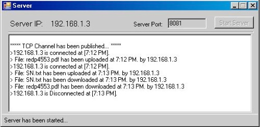

P2P File Sharing
Sharing resources
Sometimes we forget that the Internet, when you strip away all the hype, is really still just a large network of computers. One of the primary purposes of a network is to allow different computers on the network to share resources, including files. The ftp process provides a way of doing that.
Here is a simplified diagram of how the ftp process works
Files can be transferred in either direction. "Downloading," refers to a transfer of a file from a remote computer to your computer. "Uploading" refers to a transfer of a file from your computer to a remote computer.

Simply put, FTP allows you to enter a directory on a computer connected to the network and transfer a file to or from that directory to a directory on another computer. Normally, you will be transferring the file to or from a large, multi-user computer (i.e. your web host) and your own computer.
Fard FTP
Fard FTP is an open source software that I’ve been developed that by Microsoft technologies like .Net Framework and .Net Remoting. This software has the FTP engine to transfer/receive data to/from other computers. Fard FTP is using publisher / subscriber architecture to achieve the goal.
Snapshot

Client Application.

Server Application
Future Enhancements
1- Create Directory on remove server.
2- Filter remote server shared file.
3- User authentication and set user privileges.
4- Download Asynchronously.
5- Upload Asynchronously.
New Project with Fard FTP engine
1- Enterprise Video Conference.
2- Internal Company Messenger.
More Information
For more information please visit my official website at www.hfard.com